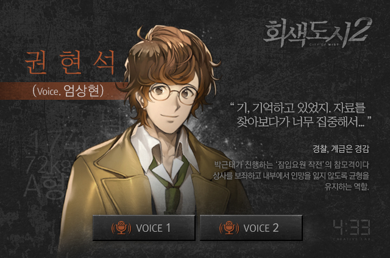

「회색도시2」의 극 중 서사의 중심은 두 사람으로 정은창과 권현석이 있다.
그 중 권현석에 대해 알아보도록 하자.
전작인 회색도시1의 주인공 권혜연의 아버지인 그는 과거회상 장면의 짤막한 비중으로 처음 얼굴을 공개한다. 작 중 주인공 권혜연과의 나이차이에 대한 설정붕괴때문에 후속편에서 급하게 추가된 설정으로 학창시절 사고를 쳐 18살 차이의 딸이 생겼다는 캐릭터가 되어버렸다... 아이러니하게도 이 설정 때문에 어린 나이에 육아, 수험, 경찰학교 생활을 마친 먼치킨 캐릭터가 되었으나 이런 점이 작중에 표현되지는 않는다. 학창시절 사고를 친 경력때문에 과거에 부당하게 죄를 뒤집어 썼던 경험이 있으며, 이 사건은 이후 그에게 큰 영향을 끼치게 된다. 「회색도시2」에서는 주인공인 권현석의 내적동기와 씁쓸한 현실 사이에서 갈등하며 분투하는 모습을 담아내고 있다.